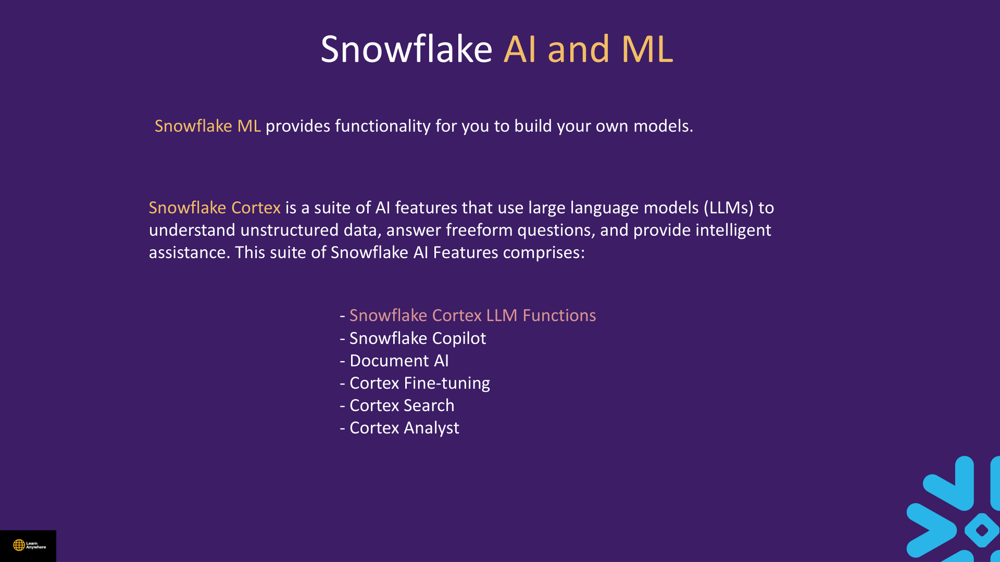
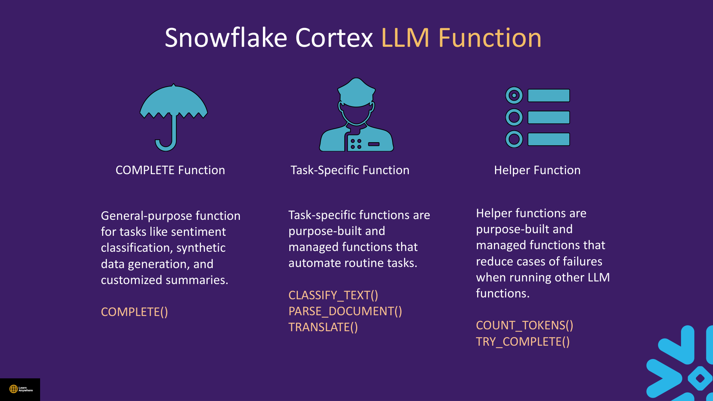
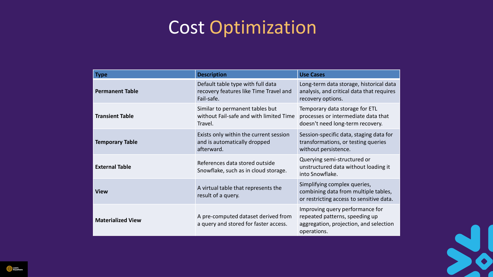
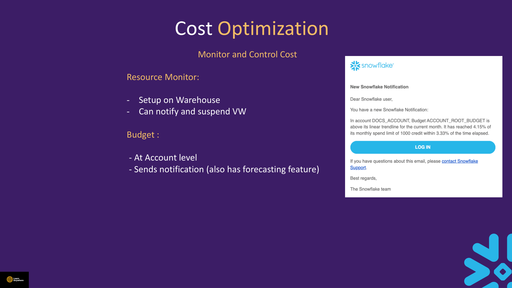

Lectures in this section
Every lecture below links to the notes that cover it.
- ML Function 3:08 Advance Concept/ML Function.txt
- Demo : ML Function 5:25 Advance Concept/ML Function.txt
- Cortex & LLM Concept 2:41
- Demo : LLM Functions 4:37 Advance Concept/LLM.txt
- [COF-CO3] Cortex Analyst Concept 3:13 Advance Concept/Cortext Analyst.txt
- [COF-CO3] Demo : Cortex Analyst I 9:11 Advance Concept/Cortext Analyst.txt
- [COF-CO3] Demo :Cortex Analyst II 3:25 Advance Concept/Cortext Analyst.txt
- [COF-CO3] Cortex Search Concept 3:26 Advance Concept/Cortext Search.txt
- [COF-CO3] Demo : Cortex Search 13:00 Advance Concept/Cortext Search.txt
- [COF-CO3] Document AI Concept 3:25
- [COF-CO3] Demo : Document AI 6:54 Advance Concept/Document AI.txt
- Demo : Streamlit 3:26
- Cost Optimization : Cost Insights 4:38
- Cost Optimization : Use of different Table types 2:35
- Cost Optimization : During Replication and Failover 1:50
- Cost Optimization : Monitor and Control Cost 4:01
- Cost Optimization : Attribute Costs 4:02 Advance Concept/Attribution Cost.txt
What Cortex Brings to the Warehouse
Snowflake Cortex is a suite of AI features that use large language models to understand unstructured data, answer freeform questions, and provide intelligent assistance — all inside Snowflake's trust boundary with SQL as the integration layer.

The Cortex suite comprises:
- Cortex LLM Functions — hosted LLM calls from SQL (
COMPLETE, classify, translate, and more). - Snowflake Copilot — intelligent assistance inside Snowsight.
- Document AI — parse and extract structured fields from documents (
AI_PARSE_DOCUMENT,AI_EXTRACT). - Cortex Fine-tuning — adapt models to your domain.
- Cortex Search — managed semantic index for similarity retrieval and RAG.
- Cortex Analyst — natural-language questions against governed semantic models.
Snowflake ML is separate from Cortex: it provides functionality for you to build your own models (classification, forecasting, anomaly detection) on tabular data inside the account.
TARGET_LAG; run LLM demos on small row counts.
ML Function
CREATE SNOWFLAKE.ML.CLASSIFICATION trains a multiclass model inside Snowflake on tabular features — no separate ML platform export. Distinct from Cortex AI_CLASSIFY, which labels free text against a category array.
- Prepare training table with feature columns +
TARGET_COLNAME. - Create model referencing a view or table via
SYSTEM$REFERENCE. - Score with
model!PREDICT(INPUT => {*})— output JSON with class probabilities.
Demo : ML Function
Course file: Advance Concept/ML Function.txt
USE ROLE ACCOUNTADMIN;
CREATE DATABASE IF NOT EXISTS ml_lab_db;
CREATE SCHEMA IF NOT EXISTS ml_lab_db.models;
USE SCHEMA ml_lab_db.models;
CREATE OR REPLACE TABLE training_purchase_data AS
SELECT CAST(UNIFORM(0, 4, RANDOM()) AS VARCHAR) AS user_interest_score,
UNIFORM(0, 3, RANDOM()) AS user_rating, 'not_interested' AS class
FROM TABLE(GENERATOR(ROWCOUNT => 100))
UNION ALL
SELECT CAST(UNIFORM(4, 7, RANDOM()) AS VARCHAR), UNIFORM(3, 7, RANDOM()), 'add_to_wishlist'
FROM TABLE(GENERATOR(ROWCOUNT => 100))
UNION ALL
SELECT CAST(UNIFORM(7, 10, RANDOM()) AS VARCHAR), UNIFORM(7, 10, RANDOM()), 'purchase'
FROM TABLE(GENERATOR(ROWCOUNT => 100));
CREATE OR REPLACE TABLE prediction_purchase_data AS
SELECT CAST(UNIFORM(0, 10, RANDOM()) AS VARCHAR) AS user_interest_score,
UNIFORM(0, 10, RANDOM()) AS user_rating
FROM TABLE(GENERATOR(ROWCOUNT => 150));
CREATE OR REPLACE VIEW multiclass_classification_view AS
SELECT user_interest_score, user_rating, class FROM training_purchase_data;
CREATE OR REPLACE SNOWFLAKE.ML.CLASSIFICATION model_multi (
INPUT_DATA => SYSTEM$REFERENCE('view', 'multiclass_classification_view'),
TARGET_COLNAME => 'class'
);
CREATE OR REPLACE TABLE scored_predictions_class AS
SELECT p.*, model_multi!PREDICT(INPUT => {*}) AS raw_multi
FROM prediction_purchase_data p;
SELECT raw_multi:class::STRING AS predicted_class
FROM scored_predictions_class LIMIT 20;Cleanup
DROP SNOWFLAKE.ML.CLASSIFICATION IF EXISTS model_multi;
DROP TABLE IF EXISTS scored_predictions_class;
DROP VIEW IF EXISTS multiclass_classification_view;
DROP TABLE IF EXISTS prediction_purchase_data;
DROP TABLE IF EXISTS training_purchase_data;
DROP SCHEMA IF EXISTS ml_lab_db.models;
DROP DATABASE IF EXISTS ml_lab_db;Cortex & LLM Concept
Cortex LLM Functions provide access to industry-leading LLMs hosted and managed by Snowflake — from providers such as Meta, Mistral, and Reka. Invoke them with SQL; billing is typically per token via AI_SERVICES in METERING_DAILY_HISTORY.

Snowflake groups Cortex LLM functions into three kinds:
| Kind | Examples | Purpose |
|---|---|---|
| General-purpose | COMPLETE() / AI_COMPLETE() |
Open-ended tasks — sentiment classification, synthetic data generation, customised summaries |
| Task-specific | CLASSIFY_TEXT(), PARSE_DOCUMENT(), TRANSLATE() |
Purpose-built, managed functions that automate routine tasks |
| Helper | COUNT_TOKENS(), TRY_COMPLETE() |
Reduce failures when running other LLM functions — token estimation and safe completion |
AI_* prefix (e.g. AI_COMPLETE, AI_CLASSIFY). The deck uses earlier names like COMPLETE() and CLASSIFY_TEXT() — both refer to the same capability family. Check the docs for the exact signature in your account region.
COMPLETE), task-specific (classify, parse, translate), helper (COUNT_TOKENS, TRY_COMPLETE). Cortex Search is a service object with TARGET_LAG. Cortex Analyst consumes semantic models. Snowflake ML CLASSIFICATION trains on tabular data — distinct from Cortex LLM classify.
Demo : LLM Functions
Course file: Advance Concept/LLM.txt
LLM.txt cites ~300 pages for AI_PARSE_DOCUMENT. Current limit (Apr 2026): 100 MB per file, up to 2,000 pages; formats PDF, PPTX, DOCX.
USE ROLE ACCOUNTADMIN;
GRANT DATABASE ROLE SNOWFLAKE.CORTEX_USER TO ROLE ACCOUNTADMIN;
SELECT snowflake.cortex.translate('Hello dear student', 'en', 'es');
SELECT snowflake.cortex.ai_classify(
'Exploring new cuisines is my favorite hobby',
['cooking', 'travel', 'hobbies']
);
SELECT snowflake.cortex.ai_complete(
'llama3-8b',
'How many planets are in the solar system?'
);
-- AI_PARSE_DOCUMENT (requires PDF on SSE stage)
SELECT ai_parse_document(
TO_FILE('@cortex_lab_db.docs.docs_stage', 'table.pdf'),
{'mode': 'LAYOUT', 'page_split': true}
) AS parsed_doc;[COF-CO3] Cortex Analyst Concept
Course file: Advance Concept/Cortext Analyst.txt (filename typo — product is Cortex)
Cortex Analyst turns natural-language questions into SQL against a governed semantic layer — reducing wrong joins and metric definition drift.
- Semantic YAML on a stage — dimensions, metrics, relationships.
- SEMANTIC VIEW — SQL-native semantic model with
TABLES,RELATIONSHIPS,DIMENSIONS,METRICS. - Usage history:
CORTEX_ANALYST_USAGE_HISTORY(credits per request).
[COF-CO3] Demo : Cortex Analyst I
Run the full ecommerce setup from the course file (~200 lines): three linked tables, orders_enriched view, then semantic view DDL.
CREATE DATABASE IF NOT EXISTS cortex_analyst_dm;
USE SCHEMA cortex_analyst_dm.ecommerce;
GRANT DATABASE ROLE SNOWFLAKE.CORTEX_USER TO ROLE ACCOUNTADMIN;
-- After running tables + orders_enriched from course file:
CREATE OR REPLACE SEMANTIC VIEW ecommerce_semantic_view
TABLES (
orders AS cortex_analyst_dm.ecommerce.orders_enriched
PRIMARY KEY (order_id)
)
DIMENSIONS (
orders.customer_region AS orders.customer_region
COMMENT = 'Geographic region'
)
METRICS (
orders.total_revenue AS SUM(orders.line_revenue)
COMMENT = 'Revenue after discounts'
);
SHOW SEMANTIC VIEWS;
DESCRIBE SEMANTIC VIEW ecommerce_semantic_view;[COF-CO3] Demo :Cortex Analyst II
SELECT start_time, credits, request_count
FROM snowflake.account_usage.cortex_analyst_usage_history
WHERE start_time >= DATEADD('day', -7, CURRENT_TIMESTAMP())
ORDER BY start_time DESC;
SELECT usage_date, service_type, SUM(credits_used) AS total_credits
FROM snowflake.account_usage.metering_daily_history
WHERE service_type = 'AI_SERVICES'
AND usage_date >= DATEADD('day', -30, CURRENT_DATE())
GROUP BY usage_date, service_type
ORDER BY usage_date DESC;[COF-CO3] Cortex Search Concept
Course file: Advance Concept/Cortext Search.txt
A CORTEX SEARCH SERVICE maintains embeddings on a text column, refreshes on a TARGET_LAG schedule, and serves semantic queries via SNOWFLAKE.CORTEX.SEARCH_PREVIEW.
- Requires
SNOWFLAKE.CORTEX_USERdatabase role. ONcolumn = embedded text;ATTRIBUTES= filter/return columns.- Warehouse powers indexing; serving also consumes credits.
- Monitor:
CORTEX_SEARCH_DAILY_USAGE_HISTORY.
[COF-CO3] Demo : Cortex Search
USE ROLE ACCOUNTADMIN;
GRANT DATABASE ROLE SNOWFLAKE.CORTEX_USER TO ROLE ACCOUNTADMIN;
CREATE DATABASE IF NOT EXISTS cortex_search_demo;
CREATE SCHEMA IF NOT EXISTS cortex_search_demo.search;
USE SCHEMA cortex_search_demo.search;
CREATE OR REPLACE TABLE products (
product_id INT, product_name VARCHAR, description VARCHAR,
category VARCHAR, price DECIMAL(10,2)
);
INSERT INTO products VALUES
(1, 'MacBook Pro 16', 'Powerful laptop with M3 chip for professional video editing', 'Electronics', 2499.99),
(3, 'Ergonomic Office Chair', 'Adjustable lumbar support chair for long work sessions', 'Furniture', 599.99);
CREATE OR REPLACE CORTEX SEARCH SERVICE product_search_service
ON description
ATTRIBUTES category, product_name
WAREHOUSE = COMPUTE_WH
TARGET_LAG = '1 hour'
AS (
SELECT product_id, product_name, description, category, price FROM products
);
SELECT PARSE_JSON(
snowflake.cortex.search_preview(
'product_search_service',
'{"query": "comfortable chair for coding", "columns": ["product_name", "description", "price"], "limit": 3}'
)
)['results'] AS hits;
-- RAG pattern
SELECT snowflake.cortex.complete(
'mistral-large2',
CONCAT(
'Based on these search results: ',
snowflake.cortex.search_preview(
'product_search_service',
'{"query": "comfortable chair for coding", "columns": ["product_name", "description", "price"], "limit": 3}'
),
' What is the best chair for a programmer?'
)
) AS recommendation;Cleanup
DROP CORTEX SEARCH SERVICE IF EXISTS product_search_service;
DROP TABLE IF EXISTS products;
DROP SCHEMA IF EXISTS cortex_search_demo.search;
DROP DATABASE IF EXISTS cortex_search_demo;[COF-CO3] Document AI Concept
AI_PARSE_DOCUMENT
Extracts full document structure to VARIANT/JSON. Modes: OCR (text-heavy) and LAYOUT (tables, headings). Limits: 100 MB, up to 2,000 pages. Stage must use server-side encryption.
AI_EXTRACT
Structured extraction — define fields in natural language via responseFormat. No separate model training step.
[COF-CO3] Demo : Document AI
Course file: Advance Concept/Document AI.txt
CREATE OR REPLACE STAGE contract_stage
DIRECTORY = (ENABLE = TRUE)
ENCRYPTION = (TYPE = 'SNOWFLAKE_SSE');
-- Upload Co-Branding PDF from course data folder via Snowsight PUT
SELECT ai_extract(
file => TO_FILE(
'@contract_stage',
'EdietsComInc_20001030_10QSB_EX-10.4_2606646_EX-10.4_Co-Branding Agreement.pdf'
),
responseFormat => {
'parties': 'Who are the parties to this agreement?',
'effective_date': 'What is the effective date?',
'purpose': 'What is the main purpose of this agreement?'
}
) AS contract_basics;Demo : Streamlit
Streamlit in Snowflake lets you build interactive Python apps hosted inside Snowsight — charts, filters, and forms backed by Snowflake queries without managing separate web servers.
- Create from Projects → Streamlit in Snowsight; runs in a sandbox with warehouse compute.
- Use the Snowflake Python connector session object to run SQL from
st.cache_datafunctions. - RBAC applies: the viewer's role determines visible data; stage Streamlit files in Git repos for version control (see Section 15).
- Distinct from Snowsight dashboards — Streamlit offers full Python UI flexibility; dashboards are query-tile based.
Cost Optimization : Cost Insights
Cost Insights in Snowsight (Admin → Cost Management) surfaces spend trends, top warehouses, and anomaly hints without writing SQL. Pair it with account usage views for drill-down.
How Snowflake bills
Snowflake charges across three broad areas. Exact rates depend on edition, cloud provider, and region — see snowflake.com/pricing for current numbers.
| Category | What it covers |
|---|---|
| Compute | User-managed virtual warehouses, Snowflake-managed virtual warehouses (serverless tasks, Search, etc.), cloud services |
| Storage | Data staging, database tables, materialized views, Time Travel, Fail-safe |
| Data transfer | Cross-region and cross-cloud movement |
Automated insight-and-recommendation pairs
Cost Insights flags wasteful patterns and suggests actions. The deck lists seven recurring findings — always verify a flagged object is not a deliberate backup or consumed via a share before dropping it:
| Insight | Recommendation | Savings |
|---|---|---|
| Large tables that are never queried | Drop the table (confirm it is not used only as a backup) | Storage |
| Tables over 100 GB where data is written but never read | Drop the table (same backup caveat) | Storage and future compute |
| Materialized views used fewer than 10 times per week | Drop the view (same backup caveat) | Storage and future compute |
| Short-lived permanent tables — over 100 GB and deleted within 24 hours | Use a temporary or transient table instead | Fail-safe and Time Travel cost |
| Search optimization paths used fewer than 10 times per week | Consider removing the search access path | Storage and maintenance compute |
| Auto-clustering used fewer than 100 times per week | Consider disabling auto-clustering (check the table is not consumed by other accounts via a share) | Background recluster compute |
| Minimum cluster count equals maximum cluster count | Consider lowering the minimum | Idle multi-cluster warehouse credits |
- Daily credit consumption by service type (warehouse, storage, serverless, AI).
- Top warehouses by credits — quick wins for
AUTO_SUSPENDtuning. - Storage growth over time — Time Travel and Fail-safe retention drivers.
Cost Optimization : Use of different Table types
Object type controls durability, Time Travel, Fail-safe protection, and storage cost. Pick the lightest type that still meets your recovery needs. See also Section 2 for full table-type demos.

| Type | Description | Use cases | Time Travel | Fail-safe |
|---|---|---|---|---|
| Permanent table | Default table type with full data recovery features | Long-term storage, historical analysis, critical data needing recovery | 0–90 days | 7 days |
| Transient table | Like permanent but without Fail-safe and with limited Time Travel | ETL intermediates or data you can rebuild from source | 0–1 day | None |
| Temporary table | Exists only within the current session; dropped automatically afterward | Session scratch space, staging transforms, test queries without persistence | Session only | None |
| External table | References data stored outside Snowflake (cloud object storage) | Query semi-structured or unstructured data without loading it in | No | No |
| View | Virtual table representing the result of a query | Simplify complex queries, combine tables, restrict access to sensitive columns | N/A | N/A |
| Materialized view | Pre-computed dataset derived from a query, stored for faster access | Speed up repeated aggregation, projection, and selection patterns | N/A | N/A |
Cost Optimization : During Replication and Failover
Replication and failover (Business Critical+) add charges beyond normal storage. See Section 12 for replication mechanics.
What costs money
| Cost component | When it applies |
|---|---|
| Data transfer | Initial replication and each subsequent sync between regions or clouds |
| Compute | Determining the delta and copying the changed data |
| Storage | Target account storage for the replicated copy |
Levers to control replication cost
- Select which objects replicate — replicate only what DR actually needs, not entire accounts by default.
- Adjust refresh frequency — each sync consumes credits; tune the schedule to your RPO.
- Monitor the cost — track transfer and sync spend in Cost Insights and account usage views.
- Same-region/same-cloud replication avoids transfer fees; cross-region/cloud transfer is billed.
- External and event tables are not replicated like standard tables — plan accordingly.
Cost Optimization : Monitor and Control Cost
Snowflake gives you two complementary guardrails: resource monitors for warehouse-level credit caps and budgets for account-level spend alerts with forecasting.

Resource monitor
- Set up on a warehouse (or assigned to one)
- Can notify when a credit threshold is reached
- Can suspend the virtual warehouse
- Counts warehouse compute plus related cloud-services credits on assigned warehouses
Budget
- Works at account level
- Sends notifications when spend crosses thresholds
- Includes a forecasting feature to predict future spend
- Complements resource monitors — does not replace warehouse suspension
Resource monitors do not cap serverless compute, storage, Cortex/AI_SERVICES, event-table ingestion, or warehouses not linked to the monitor. Set AUTO_SUSPEND = 60–300 on all dev warehouses and use alerts (Section 15) for thresholds beyond monitor scope.
CREATE OR REPLACE RESOURCE MONITOR monthly_etl_cap
WITH CREDIT_QUOTA = 500
FREQUENCY = MONTHLY
START_TIMESTAMP = IMMEDIATELY
TRIGGERS
ON 75 PERCENT DO NOTIFY
ON 100 PERCENT DO SUSPEND;
ALTER WAREHOUSE etl_wh SET RESOURCE_MONITOR = monthly_etl_cap;Cost Optimization : Attribute Costs
Course file: Advance Concept/Attribution Cost.txt
Tagging gives you logical separation and chargeback for accounting. Apply either a query tag (set per session or per statement) or an object tag (attached to warehouses, databases, and other objects). Tag before usage occurs — historical metering rows do not retroactively pick up tags added later.
Account usage views for cost attribution
| View | What it shows |
|---|---|
TAG_REFERENCES | Which tags are attached to which objects |
WAREHOUSE_METERING_HISTORY | Credits consumed per warehouse over time |
QUERY_ATTRIBUTION_HISTORY | Query-level credit attribution including query tags |
Join metering history to tag references on object_id for warehouse chargeback by cost centre, environment, or workload:
SELECT * FROM snowflake.account_usage.tag_references LIMIT 10;
SELECT * FROM snowflake.account_usage.query_attribution_history LIMIT 10;
SELECT
tag_references.tag_name,
COALESCE(tag_references.tag_value, 'untagged') AS tag_value,
SUM(warehouse_metering_history.credits_used_compute) AS total_credits
FROM snowflake.account_usage.warehouse_metering_history
LEFT JOIN snowflake.account_usage.tag_references
ON warehouse_metering_history.warehouse_id = tag_references.object_id
GROUP BY ALL
ORDER BY total_credits DESC;Interview questions
Try to answer each one before opening it.
What data shape does each built-in Snowflake ML function expect?Fundamentals
SNOWFLAKE.ML.CLASSIFICATION (demoed in this section) needs a training table or view with feature columns plus a TARGET_COLNAME label column — the course uses user_interest_score, user_rating, and class. Forecasting functions expect a time-series column (timestamp) and a metric to predict. Anomaly detection needs timestamped metrics to score against a learned baseline. Contribution explorer takes tabular dimensions to explain why a metric changed period-over-period. All train inside Snowflake via CREATE SNOWFLAKE.ML.… and score with the model!PREDICT method — distinct from Cortex AI_CLASSIFY, which labels free text against a category array.
How are Cortex LLM functions billed, and what are the three function categories?Fundamentals
Cortex LLM calls are metered by tokens and appear as AI_SERVICES credits in METERING_DAILY_HISTORY. Snowflake groups them into three categories: general-purpose (COMPLETE() / AI_COMPLETE()) for open-ended tasks like sentiment, synthetic data, and summaries; task-specific (CLASSIFY_TEXT(), PARSE_DOCUMENT(), TRANSLATE()) for managed routine tasks; and helper (COUNT_TOKENS(), TRY_COMPLETE()) to reduce failures when running other LLM functions. Models come from providers like Meta, Mistral, and Reka, hosted by Snowflake. Keep demo row counts tiny — token spend is not capped by resource monitors.
What is the difference between Cortex Search and Cortex Analyst?Comparison
Cortex Search is a managed semantic index over unstructured text — you create a CORTEX SEARCH SERVICE on a text column, set TARGET_LAG, and query with SEARCH_PREVIEW for similarity retrieval (RAG). Cortex Analyst turns natural-language questions into SQL against a governed semantic model — dimensions, metrics, and relationships defined in YAML or a SEMANTIC VIEW. Search finds relevant document chunks; Analyst generates verified SQL for structured KPIs. Pick Search for product docs and PDFs; pick Analyst for "total revenue by region" style analytics.
Why does Cortex Analyst require a semantic model at all?Fundamentals
Raw table names and join paths are ambiguous — Analyst would hallucinate wrong joins or metric definitions without a curated layer. The semantic model (YAML on a stage or a SEMANTIC VIEW with TABLES, RELATIONSHIPS, DIMENSIONS, and METRICS) tells the service which columns are dimensions, how tables relate, and how revenue or other KPIs are calculated. Usage is tracked in CORTEX_ANALYST_USAGE_HISTORY. Without that layer you are asking an LLM to guess schema — fine for exploration, not for governed self-service BI.
What are the current limits and modes for AI_PARSE_DOCUMENT?Gotcha
As of April 2026, AI_PARSE_DOCUMENT accepts PDF, PPTX, and DOCX files up to 100 MB and 2,000 pages per file — the course file's ~300-page figure is outdated. The file must sit on a stage with server-side encryption (SNOWFLAKE_SSE). Modes include OCR for text-heavy scans and LAYOUT for tables and structural elements. Output is VARIANT/JSON. For structured field extraction (party names, dates) use AI_EXTRACT with a responseFormat instead of parsing the entire document layout yourself.
Where does Streamlit in Snowflake run, and how is it different from a Snowsight dashboard?Fundamentals
Streamlit in Snowflake is hosted inside Snowsight (Projects → Streamlit) and executes Python in a sandbox backed by warehouse compute when your app queries data. RBAC applies — the viewer's role controls visible rows. Dashboards are query-tile based BI; Streamlit gives full Python UI flexibility (forms, multi-page apps, custom charts). Both bill warehouse credits for data scans. Neither replaces cost controls — set AUTO_SUSPEND = 60 and right-size warehouses for interactive apps.
What are the main cost-optimisation levers this course teaches?Cost
First, Cost Insights in Snowsight surfaces seven automated insight-and-recommendation pairs (never-queried tables, write-only tables over 100 GB, rarely used materialized views, short-lived permanent tables, unused search optimization, unused auto-clustering, equal min/max cluster counts). Second, table-type and object-type choice — permanent vs transient vs temporary vs external, plus views and materialized views — controls Time Travel, Fail-safe, and storage cost. Third, replication and failover planning limits transfer, delta compute, and target storage. Fourth, monitoring and control via resource monitors (warehouse notify/suspend), budgets (account-level forecast), and AUTO_SUSPEND. Fifth, cost attribution by tagging warehouses with query tags or object tags and joining TAG_REFERENCES, WAREHOUSE_METERING_HISTORY, and QUERY_ATTRIBUTION_HISTORY.
Why must tags be in place before you can attribute warehouse spend?Gotcha
WAREHOUSE_METERING_HISTORY records credits by warehouse ID over time; it does not retroactively know which cost centre owned a warehouse unless a tag was attached when usage occurred. The attribution query joins metering rows to TAG_REFERENCES on object_id — untagged warehouses fall into an "untagged" bucket. Tag early with cost_center, environment, and workload (as in the course Attribution Cost demo) so chargeback reports are meaningful from day one. Adding tags later only affects future attribution, not historical rows unless you rebuild reports manually.
What spend do resource monitors not cap?Gotcha
Resource monitors apply to user-managed virtual warehouses assigned to them — warehouse compute plus related cloud-services credits on those warehouses. They do not cap serverless task compute, storage charges, Cortex/AI_SERVICES token spend, event-table ingestion, or warehouses not linked to the monitor. That is why the course pairs monitors with Cost Insights and METERING_DAILY_HISTORY by service_type. Exam trap: "Put a resource monitor on the account to limit AI spend" is wrong — use budgets/alerts and row-level controls for Cortex instead.
What are the seven Cost Insights recommendations the deck teaches?Cost
Cost Insights flags seven wasteful patterns: (1) large never-queried tables — drop to save storage; (2) tables over 100 GB written but never read — drop for storage and future compute savings; (3) materialized views used fewer than 10 times/week — drop the view; (4) short-lived permanent tables over 100 GB deleted within 24 hours — switch to transient or temporary; (5) search optimization paths used fewer than 10 times/week — remove the access path; (6) auto-clustering used fewer than 100 times/week — disable it (check share consumers first); (7) min cluster count equals max — lower the minimum. Always verify flagged objects are not deliberate backups or consumed via shares before acting.
What is the difference between resource monitors and budgets?Comparison
Resource monitors attach to virtual warehouses and can notify or suspend warehouse compute when a credit quota is hit — they count warehouse credits plus related cloud-services credits on assigned warehouses. Budgets operate at account level, send notifications when spend crosses thresholds, and include a forecasting feature to predict future spend. Monitors can stop a warehouse; budgets alert but do not suspend compute. Neither caps serverless, storage, or Cortex/AI_SERVICES spend.
What governance risk exists when sending data to Cortex LLMs, and what stays inside the account?Scenario
The risk is exposing PII, secrets, or regulated data in prompts that leave your governance policies — even though Cortex models run in Snowflake's trust boundary, your organisation may still require masking, row access policies, and policy review before LLM calls. Data at rest stays in your account; results land in tables you control. Apply masking upstream, avoid pasting credentials into prompts, and use AI_EXTRACT on redacted stages for document workflows. Document AI stages must use SSE encryption. For exam answers: Cortex keeps compute inside Snowflake, but you are still responsible for what text you submit.
How does AI_EXTRACT differ from AI_PARSE_DOCUMENT?Comparison
AI_PARSE_DOCUMENT returns the full document structure — pages, layout elements, OCR text — as VARIANT/JSON for downstream processing. AI_EXTRACT takes a file plus a responseFormat map of field names to natural-language questions and returns only those structured fields (parties, effective date, purpose in the course contract demo). No separate model training step is required for either. Use PARSE when you need the whole document; use EXTRACT when you know the handful of fields you want from a PDF on an SSE stage.
When would you pick transient over permanent tables for cost savings?Cost
Use transient tables for reproducible staging or intermediate results you can rebuild from source — they have shorter Time Travel (0–1 day) and no Fail-safe, so storage cost is lower than permanent tables. Permanent tables are the production default with up to 90-day Time Travel and 7-day Fail-safe. Temporary tables are session-scoped scratch space. External tables incur query compute only — data stays in the bucket. The course analogy: transient is a hotel room with a short checkout grace; permanent is an owned flat with full insurance.
Hands-on practice
Run these in a trial account on an X-Small warehouse with AUTO_SUSPEND = 60. Clean up when you finish.
-
Run the ML classification lab from this section: 300 training rows (three classes), train
model_multi, score 150 prediction rows, and show the top predicted class for 10 rows.scored_predictions_classcontains 150 rows;predicted_classis one ofnot_interested,add_to_wishlist, orpurchase.Show solutionSQL
USE ROLE ACCOUNTADMIN; USE WAREHOUSE COMPUTE_WH; CREATE DATABASE IF NOT EXISTS ml_lab_db; CREATE SCHEMA IF NOT EXISTS ml_lab_db.models; USE SCHEMA ml_lab_db.models; CREATE OR REPLACE TABLE training_purchase_data AS SELECT CAST(UNIFORM(0, 4, RANDOM()) AS VARCHAR) AS user_interest_score, UNIFORM(0, 3, RANDOM()) AS user_rating, 'not_interested' AS class FROM TABLE(GENERATOR(ROWCOUNT => 100)) UNION ALL SELECT CAST(UNIFORM(4, 7, RANDOM()) AS VARCHAR), UNIFORM(3, 7, RANDOM()), 'add_to_wishlist' FROM TABLE(GENERATOR(ROWCOUNT => 100)) UNION ALL SELECT CAST(UNIFORM(7, 10, RANDOM()) AS VARCHAR), UNIFORM(7, 10, RANDOM()), 'purchase' FROM TABLE(GENERATOR(ROWCOUNT => 100)); CREATE OR REPLACE TABLE prediction_purchase_data AS SELECT CAST(UNIFORM(0, 10, RANDOM()) AS VARCHAR) AS user_interest_score, UNIFORM(0, 10, RANDOM()) AS user_rating FROM TABLE(GENERATOR(ROWCOUNT => 150)); CREATE OR REPLACE VIEW multiclass_classification_view AS SELECT user_interest_score, user_rating, class FROM training_purchase_data; CREATE OR REPLACE SNOWFLAKE.ML.CLASSIFICATION model_multi ( INPUT_DATA => SYSTEM$REFERENCE('view', 'multiclass_classification_view'), TARGET_COLNAME => 'class' ); CREATE OR REPLACE TABLE scored_predictions_class AS SELECT p.*, model_multi!PREDICT(INPUT => {*}) AS raw_multi FROM prediction_purchase_data p; SELECT raw_multi:class::STRING AS predicted_class FROM scored_predictions_class LIMIT 10; -
Grant
SNOWFLAKE.CORTEX_USERto your role, then runTRANSLATEandAI_CLASSIFYon a single row each. CheckAI_SERVICEScredits inMETERING_DAILY_HISTORYfor today.Translate returns Spanish text; classify returns a category from your array. Metering may show a small
AI_SERVICESline — stop after one row per function.Show solutionSQL
Cost warning: Cortex LLM calls bill by token. Use exactly one row per function in trial accounts — do not loop over tables.
USE ROLE ACCOUNTADMIN; GRANT DATABASE ROLE SNOWFLAKE.CORTEX_USER TO ROLE ACCOUNTADMIN; SELECT snowflake.cortex.translate('Hello dear student', 'en', 'es'); SELECT snowflake.cortex.ai_classify( 'Exploring new cuisines is my favorite hobby', ['cooking', 'travel', 'hobbies'] ); SELECT usage_date, service_type, SUM(credits_used) AS total_credits FROM snowflake.account_usage.metering_daily_history WHERE service_type = 'AI_SERVICES' AND usage_date = CURRENT_DATE() GROUP BY usage_date, service_type; -
Create the Cortex Search demo with two product rows and query
search_previewfor "comfortable chair for coding". UseTARGET_LAG = '1 hour'and X-Small warehouse if possible.Search results include the Ergonomic Office Chair row with description and price. Indexing consumes credits — drop the service when done.
Show solutionSQL
Cost warning: Cortex Search indexing and serving both consume credits. Two rows keeps cost minimal; avoid large catalogues in trial accounts.
USE ROLE ACCOUNTADMIN; USE WAREHOUSE COMPUTE_WH; CREATE DATABASE IF NOT EXISTS cortex_search_demo; CREATE SCHEMA IF NOT EXISTS cortex_search_demo.search; USE SCHEMA cortex_search_demo.search; CREATE OR REPLACE TABLE products ( product_id INT, product_name VARCHAR, description VARCHAR, category VARCHAR, price DECIMAL(10,2) ); INSERT INTO products VALUES (1, 'MacBook Pro 16', 'Powerful laptop with M3 chip for professional video editing', 'Electronics', 2499.99), (3, 'Ergonomic Office Chair', 'Adjustable lumbar support chair for long work sessions', 'Furniture', 599.99); CREATE OR REPLACE CORTEX SEARCH SERVICE product_search_service ON description ATTRIBUTES category, product_name WAREHOUSE = COMPUTE_WH TARGET_LAG = '1 hour' AS ( SELECT product_id, product_name, description, category, price FROM products ); SELECT PARSE_JSON( snowflake.cortex.search_preview( 'product_search_service', '{"query": "comfortable chair for coding", "columns": ["product_name", "description", "price"], "limit": 3}' ) )['results'] AS hits; -
Review Cost Insights in Snowsight (Admin → Cost Management) and identify one of the seven deck insight patterns — e.g. a warehouse where min cluster count equals max, or a large table with no recent queries. Write down the recommended action without executing it.
You can name the insight (never-queried table, write-only table, rarely used MV, short-lived permanent table, unused search optimization, unused auto-clustering, or equal min/max clusters) and its recommended fix.
-
Drop the Cortex Search service, ML model, tables, views, schemas, and databases from this practice session. Suspend the warehouse.
No remaining objects in
cortex_search_demoorml_lab_db; warehouse suspended.Show solutionSQL
DROP CORTEX SEARCH SERVICE IF EXISTS cortex_search_demo.search.product_search_service; DROP TABLE IF EXISTS cortex_search_demo.search.products; DROP SCHEMA IF EXISTS cortex_search_demo.search; DROP DATABASE IF EXISTS cortex_search_demo; DROP SNOWFLAKE.ML.CLASSIFICATION IF EXISTS ml_lab_db.models.model_multi; DROP TABLE IF EXISTS ml_lab_db.models.scored_predictions_class; DROP VIEW IF EXISTS ml_lab_db.models.multiclass_classification_view; DROP TABLE IF EXISTS ml_lab_db.models.prediction_purchase_data; DROP TABLE IF EXISTS ml_lab_db.models.training_purchase_data; DROP SCHEMA IF EXISTS ml_lab_db.models; DROP DATABASE IF EXISTS ml_lab_db; ALTER WAREHOUSE IF EXISTS COMPUTE_WH SUSPEND;
Recap
- Cortex suite: LLM Functions, Copilot, Document AI, Fine-tuning, Search, Analyst; Snowflake ML is separate.
- LLM functions: general-purpose (
COMPLETE), task-specific (classify/parse/translate), helper (COUNT_TOKENS,TRY_COMPLETE). - Cortex Search = managed semantic index + SEARCH_PREVIEW; Analyst = semantic models for NL SQL.
- Cost Insights: seven insight patterns (never-queried tables, write-only, rare MVs, short-lived permanent, unused search opt, unused clustering, equal min/max).
- Object types: permanent/transient/temporary/external + views/MVs — match recovery needs to cost.
- Replication cost: transfer + delta compute + target storage; control via object selection and refresh frequency.
- Resource monitors (warehouse notify/suspend) vs budgets (account-level forecast); tags + three ACCOUNT_USAGE views for attribution.